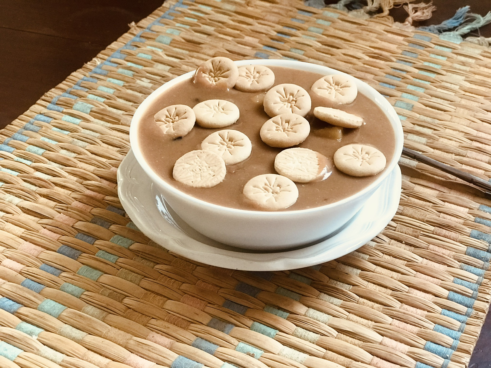

Dominican Sweet Beans

How to make Habichuelas con Dulce (sweet Cream of Beans)
This is a 100% Dominican Easter recipe. Give it a try and you wont regret. Serve warm or cold with milk cookies.
Ingredients
- 2 pounds dry red kidney beans
- 6 (3 inch) cinnamon sticks
- 2 pounds white sweet potatoes, peeled
- 3 ½ cups milk
- 2 (12 fluid ounce) cans evaporated milk
- 1 (14 ounce) can coconut milk
- 3 cups white sugar
- 1 ½ cups sweetened condensed milk
- 1 teaspoon ground cinnamon
- 1 teaspoon ground nutmeg
- ½ teaspoon ground cloves, or to taste
- 1 cup raisins
- 34 teaspoons unsalted butter
- 2 teaspoons salt
- 2 teaspoons vanilla extract
- 1 pinch ground ginger
Directions
- Place beans and cinnamon sticks in a large pot and add water to cover by 2 inches; bring to a boil. Boil for 2 to 3 minutes. Remove from the heat, cover, and let soak for 1 hour.
- Cube sweet potatoes and place in a large pot. Cover with salted water and bring to a boil. Reduce heat to medium-low and simmer until tender, about 20 minutes. Drain.
- Puree beans and soaking water with an immersion blender until smooth. Pass blended beans through a colander.
- Add milk, evaporated milk, and coconut milk. Turn on the heat to medium and add sugar, condensed milk, cinnamon, nutmeg, and cloves. Cook, stirring every once in a while, for 15 minutes. Add sweet potatoes, raisins, butter, salt, vanilla, and ginger. Reduce heat to low and cook, stirring every now and then, for 15 more minutes.
Home